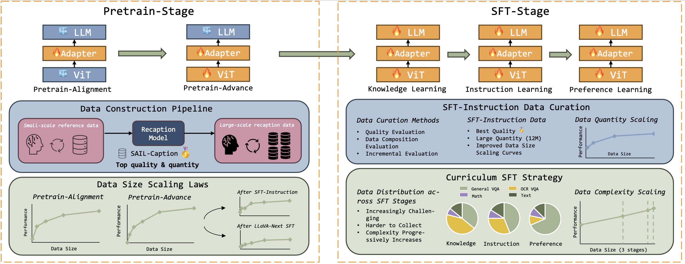
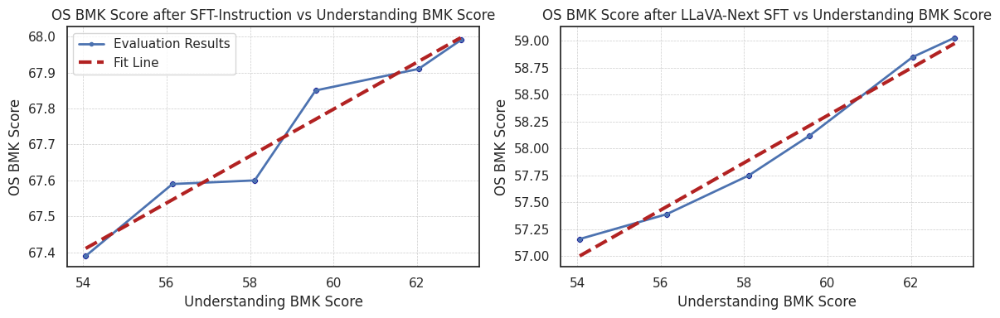

In the existing research related to VLMs, there are two problems that lead to poor performance of lightweight VLMs:
To address these issues, we proposed a scalable high-quality detail caption data production solution and expanded the scale of pre-training data for SAIL-VL-2B to 655B tokens, observing stable data size scaling laws. In the SFT stage, we address the importance of high-quality SFT data and the design of the training stage, we observed a trend of the model performance improving with the increase in the amount of training data.
The SAIL-VL series of models with parameter sizes of 2B and 8B, have achieved leading performance among open-source VLMs. In terms of the average scores of 18 commonly used VLM benchmarks, they outperform series models such as InternVL2.5-MPO and DeepSeekVL-2.
The SAIL-VL series of models use InterViT-300M, Qwen2.5-2B, and Qwen2.5-7B as the base models and are trained through two pre-training stages and three SFT stages:
We proposed a scalable method for constructing high-quality detail caption data, achieving efficient pre-training data construction through the following four steps:
Based on the above framework, we propose the SAIL-Caption dataset, which contains 300M high-quality Chinese and English detail caption data. Through statistical analysis, compared with open-source datasets, SAIL-Caption has a leading number of non-repeated n-grams and non-repeated POS phrases of various types, demonstrating the richness of visual elements contained in its text descriptions. In addition, we also quantitatively evaluated the data quality by comparing with various baseline datasets, and the results show that the quality of the SAIL-Caption dataset significantly outperforms other open-source datasets.
Comparison of SAIL-Caption with other open source detail caption datasets.
We used 131B and 524B tokens for model training in the Pretrain-Alignment and Pretrain-Advance stages of SAIL-VL respectively, and verified the data size scaling laws for these two stages.
It is worth noting that there is a strong correlation between the performance of the pre-trained models and the models after SFT, which highlights the importance of building a VLM base with stronger basic visual understanding capabilities.
We introduced the design of SAIL-VL in the construction of high-quality SFT data and the configuration of the SFT training stage respectively, and verified the performance change trend of the SAIL-VL-2B model under different amounts of SFT training data.
We proposed a set of solutions for optimizing the SFT data ratio, which is mainly divided into the following three parts:
Based on the above solution, we constructed 12M-scale training data for the SAIL-Instruction stage, and compared the performance change trend of the model when using this dataset and other open-source data for training. The results show that the model trained with SAIL-Instruction achieved the best overall performance at each training data scale. In addition, we found that the performance ranking of models obtained from SFT data of different qualities at different training stages remained unchanged, which also verified the effectiveness of using a sub-dataset to train the model to verify its data quality.
SAIL-VL uses a three-stage SFT training paradigm. As the training progresses, the training data has the following characteristic changes:
Compare the effects of the three-stage training scheme with the traditional all-in-one (AIO) training scheme. For the AIO baseline, we mixed the three-stage training data of SAIL-VL and combined them into one stage for training. The experimental results show that the curriculum-learning-style three-stage SFT scheme can effectively improve the overall performance of the model.
@article{dong2025scalable,
title={Scalable vision language model training via high quality data curation},
author={Dong, Hongyuan and Kang, Zijian and Yin, Weijie and Liang, Xiao and Feng, Chao and Ran, Jiao},
journal={arXiv preprint arXiv:2501.05952},
year={2025}
}